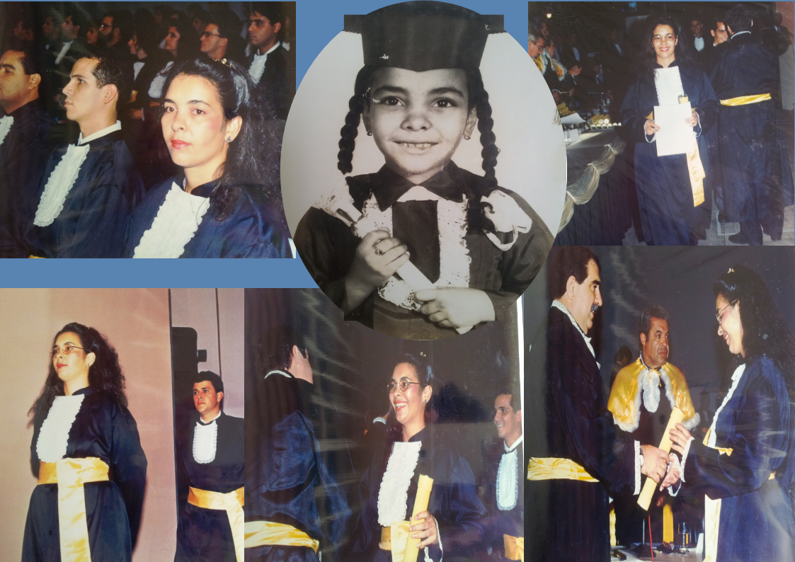
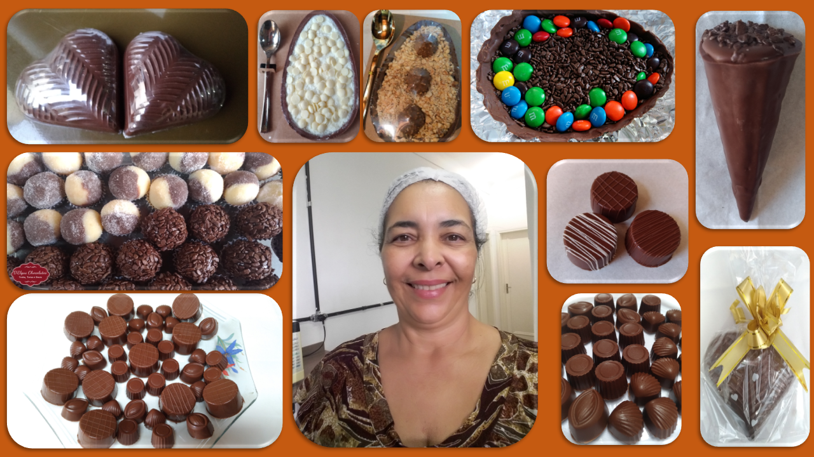
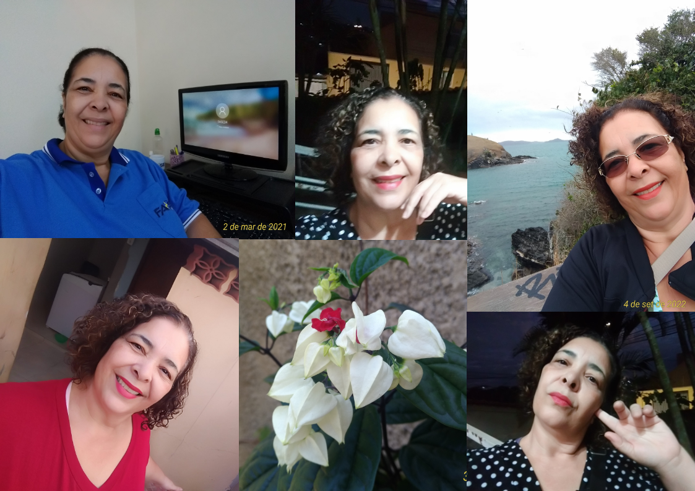

Eu tenho a tendência de achar que o que fiz não foi nada, não deu trabalho, não foi muito esforço. Mas a verdade é que para sair de qualquer ponto é necessário desejar, sonhar, planejar, estabelecer metas, focar e ir construindo. Então, tendo essas características em minha personalidade, busquei crescimento e evolução em vários aspectos da vida.

O que fiz?
Estudei muito. Escolhi trilhas que acreditei serem o futuro. Por isso cursei
o Técnico em Telecomunicações e depois Tecnologia em Processamento de Dados.
Por que escolhi o curso técnico?
Porque sou de família com recursos mínimos, apenas para a sobrevivência,
que não poderiam me ajudar com os custos da escola.
Foi uma boa escolha, que me direcionou para o ambiente do futuro nas empresas.
Daí foi um passo para eu me interessar por TI e então fui logo dando mais passo na vida acadêmica.
Pelo pensamento lógico, por meus objetivos de crescimento profissional, por ter as condições necessárias cursei Tecnologia em Processamento de Dados.
Ao longo da carreira, em uma grande empresa, fiz inúmeros treinamentos em TI.

Dentre eles: ... Acredito que foi porque sempre fui interessada em tecnologia mesmo. Enquanto trabalhei nessa grande empresa, por 20 anos, construí também uma família com meus dois filhos: uma moça e um rapaz, Ana Flávia e Arthur. Uma característica marcante da minha vida é: não consigo parar. Quero estar realizando algo. Quero estar criando algo.
Depois que saí dessa empresa, aprendi a costurar, fazer tricô, fiz um curso de corretagem, fui chocolatier, fiz cestas de café da manhã e, recentemente, voltei a me interessar por TI. Então resolvi me atualizar e fazer algo que eu sempre quis mas ainda não tinha encontrado o caminho: desenvolvimento em web. Assim cheguei aqui nesse portifólio e o estou construindo com novos conhecimentos que estou alcançando.

Humm... e não vou parar. Para o futuro tenho metas nessa área. Meu interesse é CyberSecurity, Cloud Computing, Devops. Continuo construindo minha trilha. Não é fácil. Exige esforço, dedicação, superação, resiliência, meta, inteligência. Mas o resultado, acredito, está sendo muito bom. A vida é feita de escolhas!
